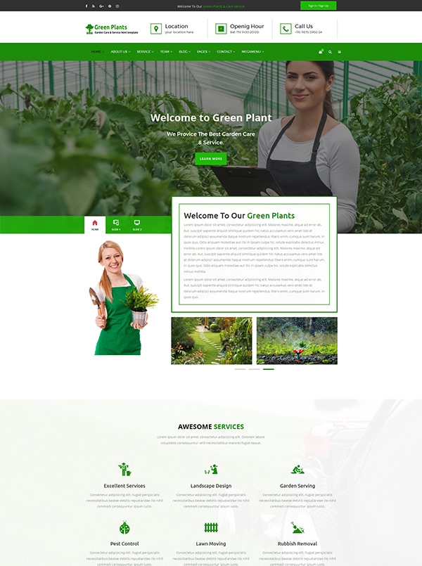
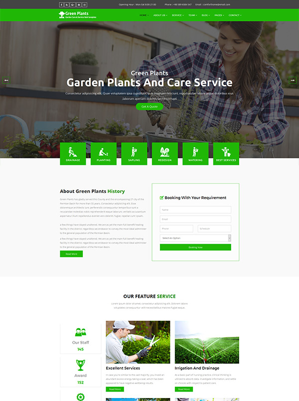

Garden Maker
Garden Care & Service HTML Template
Awesome Unique Look
Advanced Typography
Awesome Unique Look
Active Appointment Form
Active Contact Form
Background Parallax
Bootstrap Framework Based
Built on Bootstrap 3.x
BX Slider
Cross Browser Compatibility
Easy to customize
Fully Responsive Layout
Flickr Feed
Modern and clean design
Owl Carousel
Pixel Perfect Design
Smooth animation
Twitter Feed
Update Free Life Time
Valid HTML5 & CSS3 Files

Multipage One

Multipage Two
Copyright© Garden Maker 2017.Unlock Design All right reserved.